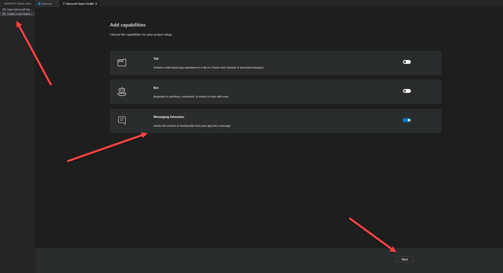
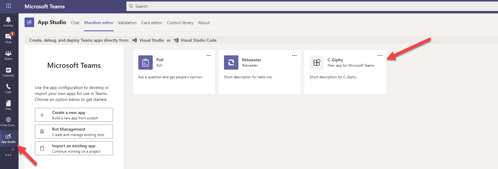
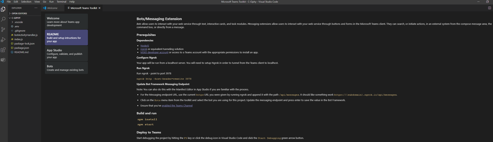
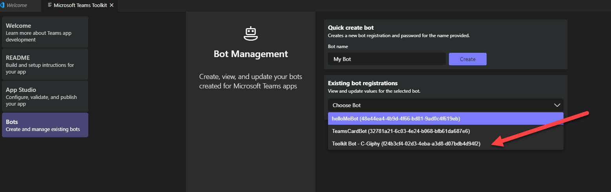
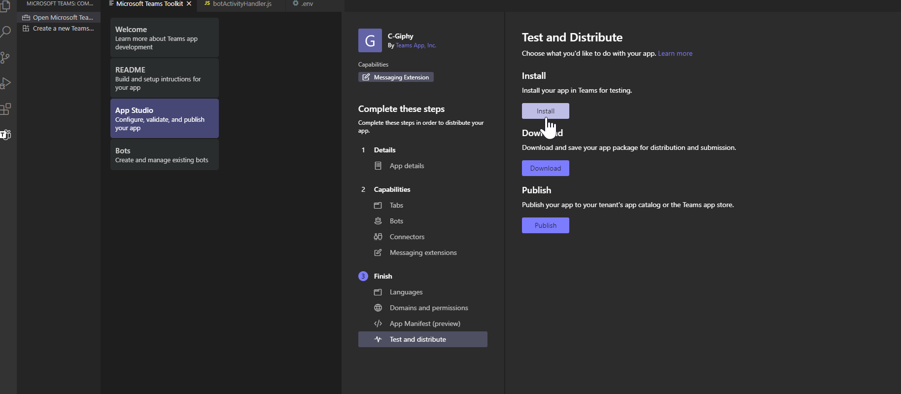
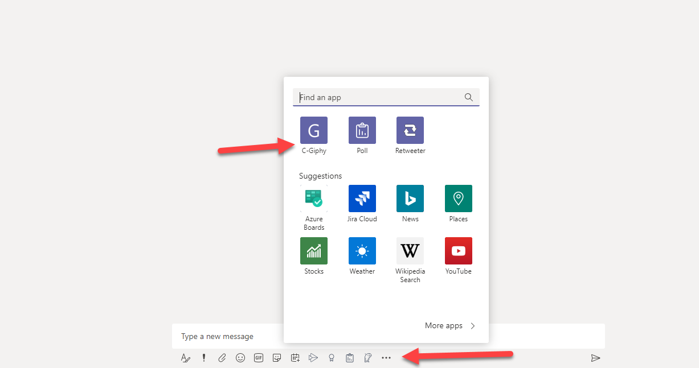
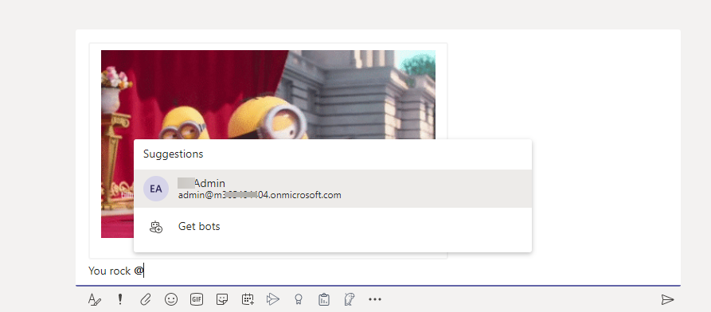
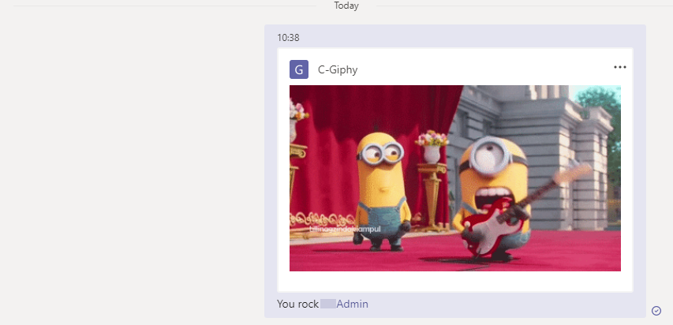
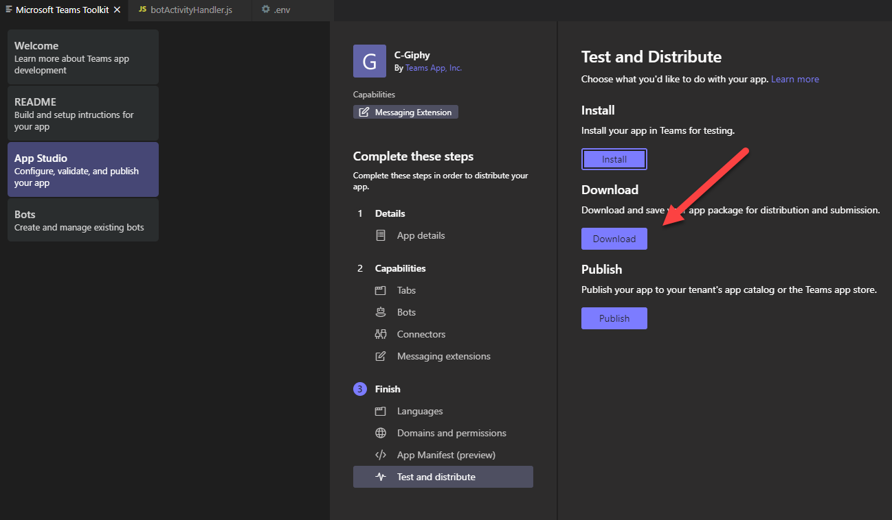
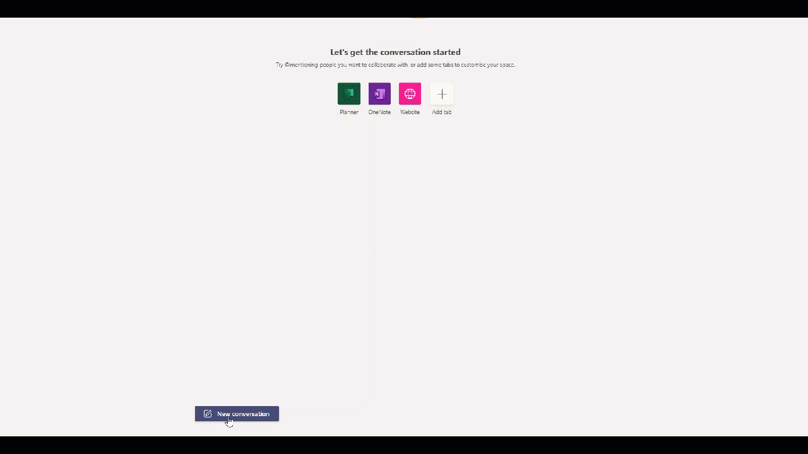

How to build your own search based GIPHY app with Microsoft Teams Toolkit¶
Create a search based Messaging extensions in Microsoft Teams.
Published on 30/10/2020
Hoping this article will get you started in creating more search based messaging extensions which will query an external system via an API call and with the information response, we create cards that can be inserted into chat.
Here we will recreate the GIPHY app ourselves 😊!! Hope you will have fun by building this app.
Sample available in Microsoft Teams Development Samples https://aka.ms/teams-samples
What this blog covers¶
- Microsoft Teams Toolkit
- Detailed steps to Create a Microsoft Teams search based messaging extension using the toolkit
- Sample source code
- A fun GIF search app which you can create and use.
First thing we need to do is , make sure your development environment is set to success.
You have
- Installed the Microsoft Teams Toolkit in your Visual Studio Code
- Node.js installed (version 6 or higher)
- Set up ngrok, this is not familiar to you then not to worry , check next section or if you already have this set up ignore the next section.
- M365 developer account
For ngrok set up etc go to my previous blog so I don't have to repeat 😊 But there have been a lot of changes in terms of UI from within the Teams Toolkit so stay here after your initial set up.
Type of Messaging Extension
There are two types of Messaging extensions
- Action-based commands allow you present your users with a modal popup (called a task module in Teams) to collect or display information, then process their interaction and send information back to Teams
- Search-based commands allow your users to search external systems and insert the results of that search into a message in the form of a card.
Here you will build Search based one, if you want to build an action based one, check out my blog here
Create the app¶
Once you have installed the extension for Microsoft Teams Toolkit, go ahead and create an app.

Once an app is created, it will be already availabe in the App Studio (this is the app registration).

Do not delete these apps from App Studio or you cannot update the app using Teams Toolkit. It will throw an error when you try to update the
App Details
Give it a name¶
You are now walking through the wizard. Give the app a name

Create the bot¶
From the toolkit, create a new BOT or use an existing one. You will have to login to your tenant to do this.

More on bots here
Click on Finish
Project scaffolding¶
Choose a workspace where you want your project to be scaffolded (local) and click Choose workspace and your project will be created as shown below.

Ngrok Url + Bot messaging end point¶
In a terminal session run below tunneling command, which then gives you a https url for your local set up.
ngrok http -host-header=rewrite 3978

Copy this URL.
Now within Visual Studio Code , go to the Toolkit > Bots , you will have to sign in again here.

Choose the Bot you just created

And update the messaging end point which is your ngrok url + /api/messages

App Updates¶
Update your app details from within the toolkit, you might notice there is no manifest file to update manually. Everything is done in the cloud and synced in real time.
E.g let us update the Icons from the Toolkit

If you go to App Studio you will notice it already updated (like magic)

Code changes¶
Now let us set up our project to run locally to test.
open the terminal and go to the location of the current project , run one time to install dependencies
npm install
update the code from my sample, the files changed will be
- botActivityHandler.js
- env

In botActivityHandler.js I am updating the handleTeamsMessagingExtensionQuery which is the function that is invoked when the service receives an incoming search query.
I am calling the GIPHY API, I have a key which I am storing in env file. Get your free key from GIPHY Developers
And returning the results in a grid.
And handleTeamsMessagingExtensionSelectItem which is the function that is invoked when the user selects an item from the search result grid returned from the search experience.
Your env file will already have the BOT ID and BOT Password which was done as part of the scaffolding step.

Then to serve it from local run,
npm start
You will see that your local project is now running on localhost:3978
You have successfully configured your app, now we need to test it.
Test your app¶
From the toolkit, Go to App Studio > Finish > Test and distribute.

And click on install which will then open the app up in you Teams for you to add

Now go ahead and test it.
- Find the app from the compose area

- Search and choose a GIF

- Add additional message

- Send

Package your app¶
Within the toolkit, you can download the package for install in Teams once you are happy with the implementation.

Points to note¶
- Teams Toolkit manages manifest updates, it updates changes real time.
- On creation of App using Toolkit, app is registered in App Studio
- There will be two to three times you need to login, to create app, to add or update BOT
- Learn more about Teams app development https://aka.ms/teams-doco
Working App after installation¶
